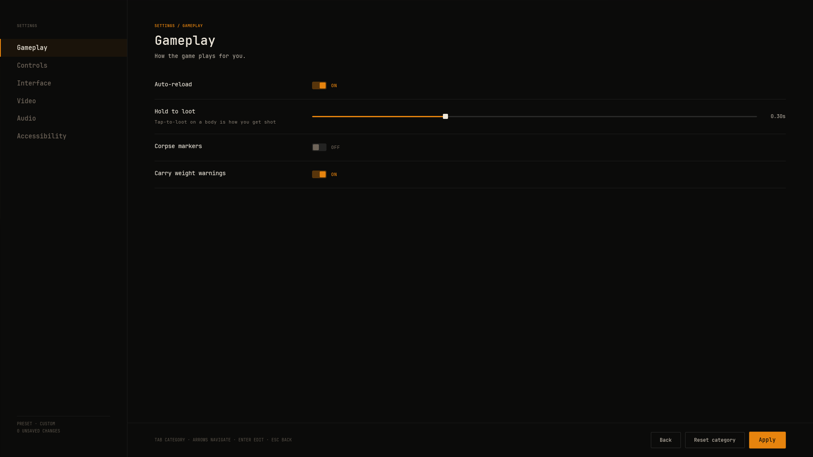
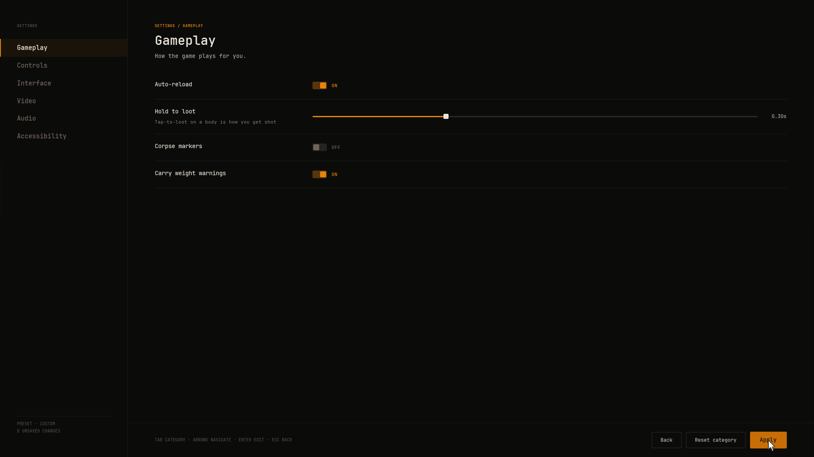

Settings
The settings screen draws its rows from a registry that describes each setting, and reads and writes values through a source your game controls. The shipped screen applies every row to the engine straight away, so window mode, volumes, language and the rest work with no code. This page covers both halves, how a display change is kept or reverted, and how to add a row of your own.

What works out of the box#
The shipped W_SettingsScreen uses three classes from the NVSViewSettings module:
| Class | Role |
|---|---|
UNVSViewEngineSettingRegistry | The rows of a typical shooter's settings screen, in six categories: Settings.Video, Settings.Audio, Settings.Controls, Settings.Gameplay, Settings.Interface and Settings.Accessibility. The Controls category also gets one key binding row per bindable action. |
UNVSViewEngineSettingCategories | The category rail, with each category's name and description. |
UNVSViewEngineSettingsSource | Reads and writes each row wherever the engine keeps it: the game user settings, console variables, the sound mix and the current culture. Values the engine has no home for are saved in UNVSViewSavedSettings, in GameUserSettings.ini. |
Saved values are applied again once a player has a controller, by UNVSViewPlayerSettingsSubsystem. Rows the engine cannot act on, such as the Gameplay rows, subtitle size and the high contrast HUD, are saved for your game to read. The accessibility ones say Read by the game on the screen.
#include "Settings/NVSViewSavedSettings.h"
const UNVSViewSavedSettings& Saved = UNVSViewSavedSettings::Get();
const bool bAutoReload = Saved.IsAutoReload();
const int32 SubtitleSize = Saved.GetSubtitleSize(); // 0 small, 1 medium, 2 large
const float Fov = Saved.GetFieldOfView();Each setting id names its tab and its setting, such as Video.WindowMode, Audio.MasterVolume or Gameplay.AutoReload. The full list is in Settings/NVSViewSettingIds.h.
The Engine Settings Setup Definition#
How the shipped rows reach the engine is set on one data asset, the Engine Settings Setup Definition. The plugin ships DA_BlacklineEngineSetup. Make your own from right-click > Miscellaneous > Data Asset, and a game's own setup wins over the one the plugin ships.
- Sound Mix, Master Class, Music Class, Effects Class, Voice Class, Interface Class
- The sound mix and sound classes the five volume sliders drive. Point them at your own to make the sliders control your game's audio.
- Night Mode Effect
- Added to the master submix while dynamic range is set to Night.
- Drive Field Of View, Authored Field Of View
- Scales each player's camera field of view by the saved value against the one your cameras are built with. Turn it off if your game sets field of view itself.
- Revert Window Seconds
- How long a display change waits for the player to keep it. Default 15.
- Max Visible Notifications, Max Held Notifications
- The notification stack's sizes. See Notifications.
- Back Keys
- Keys that close the screen on top. Escape and the gamepad's right face button by default.
- Action Set
- The actions the Controls tab lists for rebinding.
- Context Priority
- The priority of the mapping context built from the player's bindings. Keep it above your game's own contexts, so a rebound key wins.
Describe, then store#
Blackline never keeps a setting's value itself. A UNVSViewSettingRegistry describes each row, and the value always travels through INVSViewSettingValueSource, so your save system can stay the only store. A registry is a data asset, so you can also make one and fill its rows by hand.
Each row is an FNVSViewSettingDescription:
- SettingId, CategoryId
- The row's id, and the id of the category it is listed under.
- Kind
Bool,Enum,SliderorKeybind. It picks the row widget and which field of the value it reads.- ApplyModel
LiveorConfirmAndRevert. See below.- Label, HelpText
- The row's caption and the line under it.
- Options, OptionValues, Presentation
- A choice row's choices, what each stands for (such as 60 for a 60 FPS cap), and how it draws them.
Autouses chips for up to four choices and a stepper past that. - DefaultValue
- What a player starts with on first launch: a slider's number, 1 for a switch that starts on, or a choice's place in Options counting from 0.
- MinValue, MaxValue, StepSize, ValueSuffix, DisplayFractionalDigits
- A slider's range and readout. A step of zero is continuous.
- KeyMappingName
- For a key binding row, the action it binds.
A value is an FNVSViewSettingValue. Kind says which field is used: bBoolValue, OptionIndex or Number. Key binding rows carry no value field, because the player's key profile stores bindings.
Keeping or reverting a change#
Most settings are Live and take effect when written. Settings that can leave the screen unreadable, such as window mode and resolution, are ConfirmAndRevert. They apply provisionally and go back unless the player keeps them.
The clock lives in UNVSViewSettingApplySubsystem, a local player subsystem, so closing the screen cannot skip a revert. The window opens on the first provisional change, later changes do not extend it, and it counts down while the game is paused. A revert is an ordinary write of the old value through the source.
- The player changes rows. Each change is held, the row shows the new value and the bar counts the unsaved changes. Nothing is written yet.
- The player presses Apply. Every held change goes to the apply subsystem, and key binding drafts are saved.
- A
Liverow is written throughSetSettingValuestraight away. - A
ConfirmAndRevertrow first reads and keeps its old value, then writes the new one. A veil asks "Keep these settings?" with a countdown. - Keep, or Enter, confirms. Revert, Escape, or the countdown reaching zero writes the old values back.

Closing the screen without Apply throws held changes away. Untick bChangesWaitForApply on a copy of the screen to write each change as it is made. A Video change is saved only once it is kept, so if the player quits during the window the next launch puts the kept value back.
Driving the clock yourself#
The apply subsystem works without the screen. Its functions are Blueprint callable:
- void SetValueSource(const TScriptInterface<INVSViewSettingValueSource>& Source)
- Where values live. Nothing applies until one is set.
- void SetRegistry(UNVSViewSettingRegistry* InRegistry)
- Says which apply model each setting uses. Settings it does not describe apply live.
- bool ApplyValue(FName SettingId, const FNVSViewSettingValue& Value)
- Writes the value. False, and nothing written, when the source is missing, refuses, or cannot read the old value of a confirm and revert setting.
- void ConfirmPendingChanges() / void RevertPendingChanges()
- Keeps every provisional change, or writes every old value back now.
- int32 NumPendingChanges() const / float GetSecondsUntilRevert() const
- For a prompt of your own.
Key bindings#
Key bindings are Enhanced Input. The Controls tab lists one row per action in the Engine Settings Setup Definition's Action Set, a UNVSViewActionSet. Point it at your own set to list your game's actions. UNVSViewKeyProfileSubsystem builds the player's bindings into one mapping context added at Context Priority, so your input code reads the actions as usual. Each row captures a key when its chip is clicked, offers Swap or Clear on a clash, and an input test strip on the Controls tab lights each action as it fires. While the screen is open, binding edits go to a draft that Apply saves and closing discards.
Adding a setting row#
This example adds a "Damage numbers" switch to the Gameplay tab and keeps every shipped row. It takes two small C++ classes, because the registry and the engine source are where the shipped rows are built.
1. Describe it#
// MySettingRegistry.h
#pragma once
#include "Settings/NVSViewEngineSettingRegistry.h"
#include "MySettingRegistry.generated.h"
UCLASS()
class UMySettingRegistry : public UNVSViewEngineSettingRegistry
{
GENERATED_BODY()
public:
UMySettingRegistry();
};
// MySettingRegistry.cpp
#include "MySettingRegistry.h"
UMySettingRegistry::UMySettingRegistry()
{
FNVSViewSettingDescription DamageNumbers;
DamageNumbers.SettingId = FName(TEXT("Gameplay.DamageNumbers"));
DamageNumbers.CategoryId = FName(TEXT("Settings.Gameplay"));
DamageNumbers.Kind = ENVSViewSettingKind::Bool;
DamageNumbers.ApplyModel = ENVSViewSettingApplyModel::Live;
DamageNumbers.Label = NSLOCTEXT("MyGame", "DamageNumbers", "Damage numbers");
DamageNumbers.HelpText = NSLOCTEXT("MyGame", "DamageNumbersHelp", "Shows the damage each hit deals");
DamageNumbers.DefaultValue = 1.0f;
Settings.Add(DamageNumbers);
}2. Store it#
Subclass the engine source, answer your id, and hand every other id to the base class. This stores the value in UNVSViewSavedSettings next to the plugin's own.
// MySettingsSource.h
#pragma once
#include "Settings/NVSViewEngineSettingsSource.h"
#include "MySettingsSource.generated.h"
UCLASS()
class UMySettingsSource : public UNVSViewEngineSettingsSource
{
GENERATED_BODY()
public:
virtual bool GetSettingValue_Implementation(FName SettingId, FNVSViewSettingValue& OutValue) override;
virtual bool SetSettingValue_Implementation(FName SettingId, const FNVSViewSettingValue& Value) override;
};
// MySettingsSource.cpp
#include "MySettingsSource.h"
#include "Settings/NVSViewSavedSettings.h"
namespace
{
const FName DamageNumbersId(TEXT("Gameplay.DamageNumbers"));
}
bool UMySettingsSource::GetSettingValue_Implementation(FName SettingId, FNVSViewSettingValue& OutValue)
{
if (SettingId != DamageNumbersId)
{
return Super::GetSettingValue_Implementation(SettingId, OutValue);
}
if (!UNVSViewSavedSettings::Get().FindValue(SettingId, OutValue))
{
OutValue.Kind = ENVSViewSettingKind::Bool;
OutValue.bBoolValue = true;
}
return true;
}
bool UMySettingsSource::SetSettingValue_Implementation(FName SettingId, const FNVSViewSettingValue& Value)
{
if (SettingId != DamageNumbersId)
{
return Super::SetSettingValue_Implementation(SettingId, Value);
}
UNVSViewSavedSettings::Get().SetValue(SettingId, Value);
UNVSViewSavedSettings::Get().Save();
return true;
}Add NVSView and NVSViewSettings to your module's dependencies.
3. Point the screen at them#
- Copy the screen Duplicate
/NVSBlackline/Screens/W_SettingsScreeninto your content folder. - Set the registry In the copy's Class Defaults, set Setting Registry Class to
MySettingRegistry. - Set the source In View Model Bindings, find the
SettingRowsbinding and set its Source Class toMySettingsSource. - Route to it In your own screen registry, point the
NVS.View.Screen.SettingsScreenrow at your copy. Every button that opens settings, such as the hub's, then opens your copy. See Replace a shipped screen.
4. Read it in gameplay#
FNVSViewSettingValue Value;
const bool bShowDamage = !UNVSViewSavedSettings::Get().FindValue(FName(TEXT("Gameplay.DamageNumbers")), Value)
|| Value.bBoolValue;Things to know#
- The Reset button raises
Settings.ResetCategorywith the category id and drops any held change. With the engine source it restores nothing else, so answer the request in your game if Reset should put defaults back. See Requests. - In the editor, ending Play restores effects that reach the whole process, so a colour filter tried in play does not tint the editor.
- A setting is never allowed to resize the editor's own window. When Play runs in its own window, display changes apply to that window.
What you see#
Open your copy of the settings screen and pick the Gameplay tab. "Damage numbers" sits at the end of the list as a switch. Flip it and press Apply, and the unsaved count drops to zero. Close and reopen the screen and the switch shows the stored value.